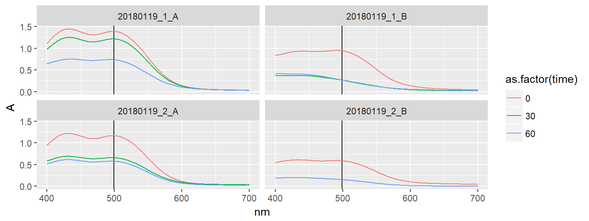

As more graphene is needed, the production procedure from 20180110 will be repeated. 1 # Journal 1500 mL 0.1 M H2SO4 was made by diluting 150 mL 1.0 M H2SO4 to 1500 mL and then dissolving 2420 mg 4-(2-ammonioethyl)benzenediazonium salt first in 100 mL solution and then adding it to the rest. This was added to the electrochemical cell and cooling starting by flowing cold ethanol through a stainless steel pipe in the solution.
A stock solution of 2-Naphthol was made by dissolving 12.0 mg in 10 mL 10 % NaOH and 40 mL H2O. An Ar ballon was attached to this to keep oxygen out. 1 mL samples from the exfoliation solution were extracted at regular intervals and mixed with 9 mL 2-naphthol solution. A syring filter was used to remove graphene.
A graphene foil (Alfa Aesar, 0.5 mm x 8 cm x 15 cm) was attached to the power supply and mounted in the solution between two stainless steel electrodes.
Several batches were made:
library(tidyverse)
library(patchwork)
experiments <- tribble(
~name, ~m_graphite, ~diazo_inital, ~diazo_final, ~m_wet, ~m_residual,
"20180119_1_A", 6.9565, 5, NA, 350.79 - 243.68, 2.0152,
"20180119_1_B", 6.9747, NA, NA, 381.17 - 242.83, 1.6342,
"20180119_2_A", 6.9486, 4.33, NA, 365.53 - 243.28, 2.6296,
"20180119_2_B", 6.9869, NA, NA, 372.91 - 243.54, 2.1901
) %>%
mutate(m_exfoliated = m_graphite - m_residual, m_1g_wet = m_wet / m_exfoliated)
knitr::kable(experiments, format = "html", col.names = c("Sample name", "Graphite mass (g)", "Initial diazo (mM)", "Final diazo (mM)", "Wet mass of exfoliate (g)", "Mass of residual graphite (g)", "Mass exfoliated (g)", "Wet mass of 1 g (g)"), caption = "In reality concentrations needs to be calibrated with later UV-Vis measurements") %>%
kableExtra::kable_styling(bootstrap_options = "striped")| Sample name | Graphite mass (g) | Initial diazo (mM) | Final diazo (mM) | Wet mass of exfoliate (g) | Mass of residual graphite (g) | Mass exfoliated (g) | Wet mass of 1 g (g) |
|---|---|---|---|---|---|---|---|
| 20180119_1_A | 6.9565 | 5.00 | NA | 107.11 | 2.0152 | 4.9413 | 21.67648 |
| 20180119_1_B | 6.9747 | NA | NA | 138.34 | 1.6342 | 5.3405 | 25.90394 |
| 20180119_2_A | 6.9486 | 4.33 | NA | 122.25 | 2.6296 | 4.3190 | 28.30516 |
| 20180119_2_B | 6.9869 | NA | NA | 129.37 | 2.1901 | 4.7968 | 26.97006 |
20180119_1_A graphite was lowered into solution at ca. 40 minutes to utilise a larger amount of the graphite. 20180119_1_B is made by reusing the solution from the previous exfoliation but with new graphite. The solution was filtered to remove graphite and a new exfoliation started as soon as possible. Approx. 150 mL 0.1 M H2SO4 was added to make up for lost solvent. 20180119_2_A I ran out of diazonium salt so only 2.0958 g was added, making the concentration approx 4.33 mM. 20180119_2_B was made in in the same way as 1B.
All collected graphite was washed with 2 x 500 mL H2O, 1 x 500 mL acetonitrile and 1 x 500 mL H2O. In all cases the graphite was stirred with the solvent and filtered again to ensure proper washing.
experiments %>%
transmute(name = name, m_graphene = 4, m_ultrasonic_wet = m_1g_wet * m_graphene, V_NMP = 400) %>%
knitr::kable(format = "html") %>%
kableExtra::kable_styling(bootstrap_options = "striped")| name | m_graphene | m_ultrasonic_wet | V_NMP |
|---|---|---|---|
| 20180119_1_A | 4 | 86.70593 | 400 |
| 20180119_1_B | 4 | 103.61577 | 400 |
| 20180119_2_A | 4 | 113.22065 | 400 |
| 20180119_2_B | 4 | 107.88025 | 400 |
The approx. 4 g of dry mass graphene in wet condition was ultrasonicated for 20 min at 10 % intensity (the max the sonicator would do). This was then centrifuged at 1000 rpm for 10 min, the pellet removed and centrifuged at 4000 rpm for 1 hour, after which a transparent, grey supernatant remained. This was removed and the remaining graphene shaken into water and centrifuged at 4000 rpm for 20 minutes (the water washing repeated once more). The graphene was then washed into a new batch of 350 mL water, ultrasonicated for 20 minutes and spin-frozen in a 1 L roundbottomed flask. This was then put on the freeze dryer.
Concentrations of diazonium salt in the different solutions was determined through UV-Vis spectroscopy of the azo-dye that is formed when the diazonium compound is reacted with a basic solution of 2-Naphtol. The absorption spectrum was recorded between 400 and 700 nm.
path <- "data/raw_data/uvvis/20180119_GrNH2_azodye/"
uvvis20180119 <- tibble(files = list.files(path = path, pattern = "*.csv")) %>%
mutate(name = stringr::str_sub(files, start = 1, end = 12)) %>%
mutate(time = stringr::str_extract(files, pattern = "\\d+(?=min)") %>% as.numeric()) %>%
mutate(data = map(paste0(path, files), read_delim, delim = ";", skip = 1)) %>%
select(-files) %>%
unnest()
uvvis20180119 %>%
ggplot(aes(nm, A, color = as.factor(time))) +
geom_vline(xintercept = 499) +
geom_line() +
facet_wrap(~name)
echem20180119 <- read_csv(file = "data/raw_data/electrochemistry/20180119_Gr-NH2_exfoliation.csv", na = "NA")
eps499 = 5.022 # L/cm*mmol, extincion coefficient for the azo-dye
full_data <- uvvis20180119 %>%
filter(nm == 499) %>%
mutate(conc = A/eps499 * 10) %>% # Multiplied by 10 to get the diazonium-concentration
select(name, time, conc) %>%
left_join(echem20180119)g1 <- full_data %>%
ggplot(aes(time, conc, color = name)) +
geom_line() +
theme(legend.position = "none")
g2 <- full_data %>%
ggplot(aes(time, temp, color = name)) +
geom_line()
g3 <- full_data %>%
ggplot(aes(time, i, color = name)) +
geom_line() +
theme(legend.position = "none")
g1 + g2 + g3 + plot_layout(ncol = 1)